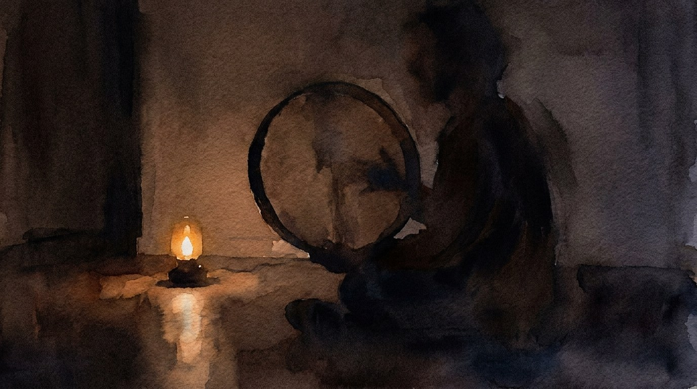
Mantra Field Books · No. 4
Who rebuilt this instrument in the modern age, what they actually teach, and how somebody starting now should begin.
A frame drum is a hoop with a skin on it. That is the entire instrument. It is almost certainly the oldest drum humans made, it is played across a band of the world running from Ireland to Rajasthan, and for several centuries in Europe it was reduced to a tambourine shaken by a child in a painting.
In the last fifty years a small number of people rebuilt it as a serious solo instrument. There are not many of them and they mostly know each other. This book is about that lineage — who they are, what each one contributed, where they disagree, and what a person holding a drum for the first time should actually do.
I write as a student rather than a master. I am a percussionist and a DJ, I have played for years, and I began studying lapstyle frame drum formally in September 2026 with Yshai Afterman. That means chapter five is about my own teacher, and you should read it knowing that. I have kept it factual and linked to his own site so you can check everything in it.
It is a convenience, and a slightly false one. The instrument's range runs well past the sea in every direction — Persian daf, Central Asian doira, Indian kanjira, Brazilian pandeiro, Irish bodhrán. What holds the family together is construction and hand technique, not geography. I have used the word because it is the one people search for, and then spent chapters ten and eleven pushing outward from it.
Chapter one
Five thousand years of evidence, and how it nearly vanished in the West.
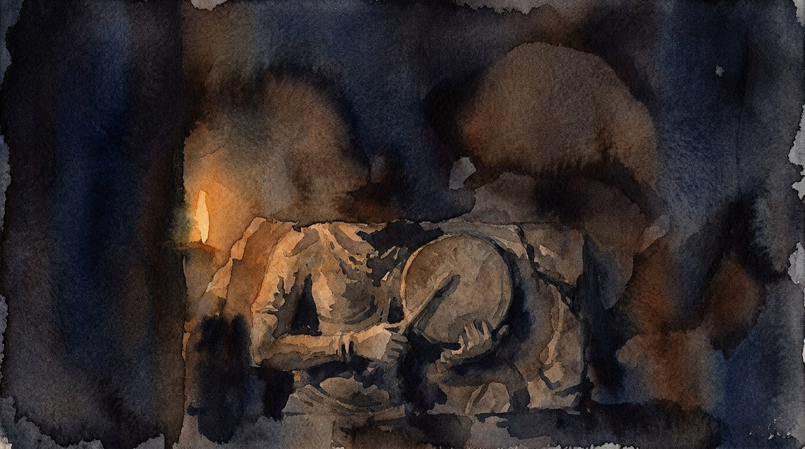
The frame drum appears in the archaeological and iconographic record of Mesopotamia, Egypt and the eastern Mediterranean from around 3000 BCE onward — in reliefs, on painted vessels, in terracotta figurines. It is the earliest drum type for which we have substantial evidence, and its form has barely changed since.
Two things about that record are worth stating carefully, because they get overstated constantly.
First: images survive better than instruments. A wooden hoop and a skin do not last three thousand years in most soils, so almost everything we know about ancient frame drums comes from depictions of them, not from the objects. We can see the shape and roughly how it was held. We cannot hear it, and we do not know the rhythms.
Second: a striking number of those depictions show women holding the drum — priestesses, ritual musicians, figures in processions. This observation is solid. What it means is the subject of chapter three, and it is where a careful book has to slow down.
The instrument did not disappear from the Mediterranean world; it disappeared from European art music. The reasons usually offered are the rise of a liturgical music culture that distrusted drums and the body, the association of frame drums with women's ritual and with folk practice, and the eventual professionalisation of orchestral percussion around instruments that could be notated and conducted.
What survived in the West was the tambourine: shaken, jingled, handed to a dancer or a child, and treated as colour rather than as an instrument with a technique. Meanwhile in Persia, in Egypt, in Turkey, in Central Asia and in South India, sophisticated solo traditions continued without interruption.
The story of the last fifty years is essentially the story of a few Westerners noticing that gap and going to find out what had been going on without them.
Chapter two
The American who went to the sources and came back with a technique.
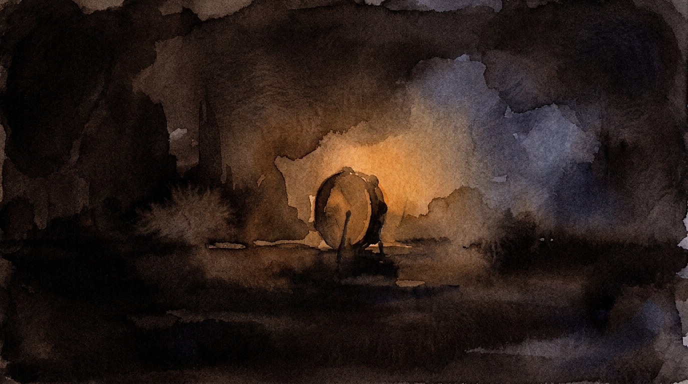
Every current frame drum player in the West is downstream of Glen Velez, whether or not they know his name.
Born in 1949, trained in Western classical percussion, he did something in the 1970s that nobody in his position had done: he went and studied the living traditions directly — Middle Eastern, North African, Central Asian and South Indian frame drum practice — and then built a coherent technique out of what he found rather than treating it as ethnographic decoration.
Velez's synthesis is exactly that — a synthesis, made by an outsider to all of the traditions he drew from. Some players within those traditions have found the result unmoored from any of them. That criticism is fair and does not much diminish the achievement: he was not claiming to be a Persian daf master, he was building a pedagogy that could be transmitted, and it worked. He is now in his seventies and still teaching, including as a guest in Yshai Afterman's online conservatory, which is a pleasing closing of a circle.
Chapter three
The book that changed everything, and the argument it started.
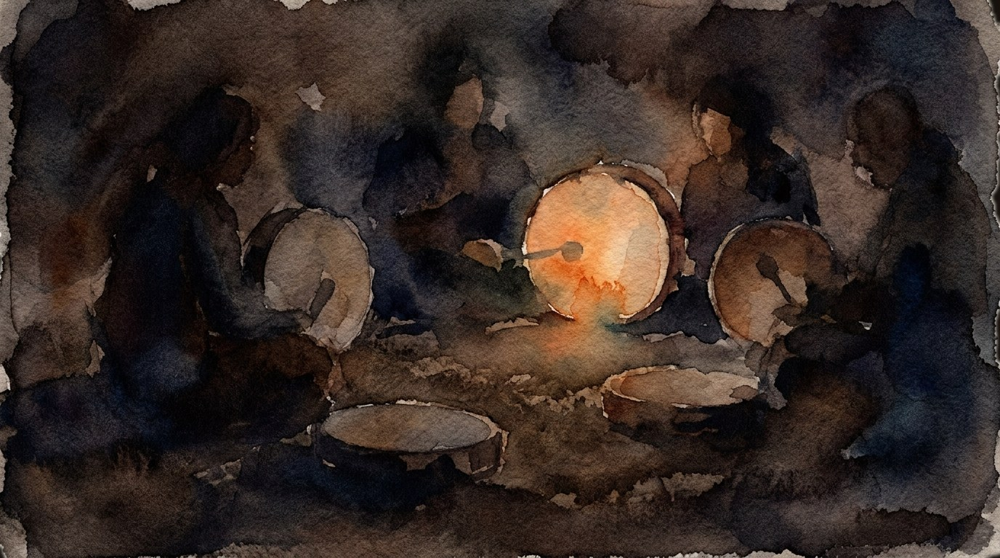
Layne Redmond came to this late and by accident. She was a painter — art school in Florida, then Rutgers, then a Max Beckmann scholarship studying painting at the Brooklyn Museum — working in a downtown Manhattan performance collective. In 1980, approaching thirty, she signed up for an eight-week conga class. In 1981 she went to a Glen Velez concert, and that was that.
She studied with Velez, then performed and recorded with him through the 1980s: Handance, Internal Combustion, and the Handance ensemble trio with the bansuri player Steve Gorn, which produced Seven Heaven (1987) and Assyrian Rose (1989). She then left to form The Mob of Angels, an all-female frame drumming group.
The turn came from cataloguing. She was helping organise Velez's collection of images of frame drummers and noticed that most of the ancient depictions showed women. She began researching seriously, and in 1997 Random House published When the Drummers Were Women: A Spiritual History of Rhythm. It was translated into German and into Persian.
The book argues that in the ancient Mediterranean world the frame drum was primarily a women's instrument, central to religious ritual, and that its disappearance from that role was a consequence of the suppression of goddess religion and of women's ritual authority. For an enormous number of players — women especially — it was the first account that made the instrument feel like an inheritance rather than an exotic import.
The iconographic core — that many ancient depictions show women with frame drums — is not disputed. What is disputed is the larger framework the book builds on it: the reconstruction of a widespread prehistoric goddess religion, and a narrative of matriarchal displacement, drawing on a lineage of thought running through Marija Gimbutas and Merlin Stone that most archaeologists now regard as unsupported by the evidence. The images tell us women played. They do not by themselves establish a theology, a social structure, or what replaced it.
Both things are true at once, and a serious player should hold both. The scholarship in the book is contested. Its effect was real and largely good: it brought a generation of women to an instrument that had been quietly coded male in the West, and it recovered a genuine and neglected part of the record.
Remo made a Redmond-designed frame drum as their first Signature Series product. In February 2000 Drum! magazine listed fifty-three heavyweight drummers who had made a difference in the 1990s; she was the only woman on the list, and the only musician on it who had never played in a famous band. She made instructional videos, recorded meditation albums for Sounds True, and taught widely.
She died on 28 October 2013, in Asheville, North Carolina, of breast cancer. She was sixty-one.
Chapter four
Where lapstyle actually became a system.
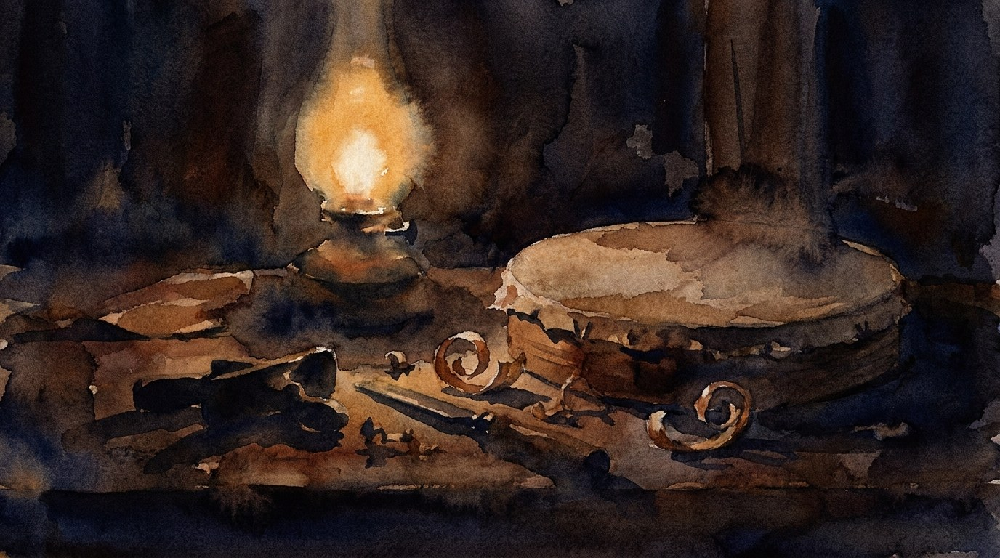
If Velez opened the door in America, the technique most people now study as lapstyle was developed and codified largely in Israel, and the central figure is Zohar Fresco.
The context matters. Israel put Persian, Iraqi, Moroccan, Turkish, Yemenite, Egyptian and Eastern European musical traditions into a very small space within a couple of generations. Musicians grew up inside more than one system at once. What came out of that was not fusion in the marketing sense but a genuine cross-training, and frame drumming was one of the things it produced.
Fresco's contribution — as a player with the tone and speed to make it undeniable, and as a teacher — was to take the seated, drum-on-the-leg position and build a complete technical vocabulary on it: finger rolls, split-hand patterns, the snapping roll, the rizz, and an approach to independence between the hands that lets one instrument sound like two. He is, by a wide margin, the most influential frame drum teacher alive, and the teachers most people encounter are usually his students or their students.
When I began planning this book I had three names: Velez, Redmond, Afterman. Fresco was not among them, and that was an error of exactly the kind this series is supposed to catch. Every route into modern lapstyle passes through him. A lineage chapter that skips the teacher of your teacher is not a lineage chapter.
Chapter five
My teacher, and what a conservatory looks like when it lives on a screen.
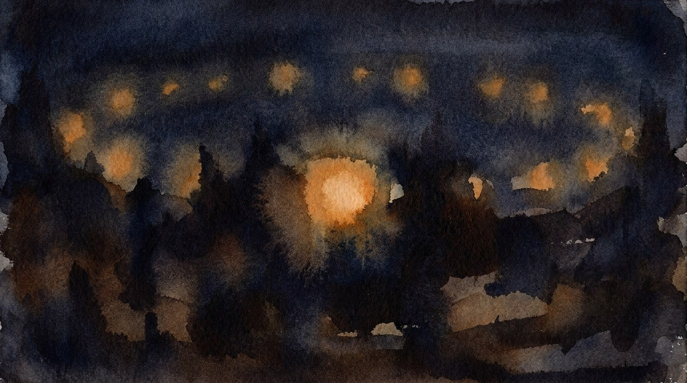
I should declare the interest before the paragraph rather than after: Yshai Afterman is my teacher. I joined his lapstyle group in September 2026. Everything below is checkable on his own site, and I have linked it so you can.
He graduated with honours in 2008 and then studied intensively with Zohar Fresco for four years, which places him directly in the lineage of the previous chapter. He also studied classical Eastern music at the Hed College of Contemporary Music with the Persian tar player and musicologist Piris Eliyahu. He plays with the ensemble Baladino.
It is long and it is international. He taught alongside Fresco at the Labyrinth Musical Workshop in Greece in 2009; headlined a solo weekend workshop in London in 2011; taught two years at Frame Drums Italia in Montelparo; joined the faculty of the North American Frame Drum Association festival in Vermont in 2012; and taught at Tamburi Mundi in Freiburg in 2012 and 2013. He has given masterclasses at Laval University in Quebec, Codarts in Rotterdam, and the El Tecler school in Tarragona.
What he runs now is unusual, and I think genuinely important for anybody outside a major city — which is most people who want to learn this instrument.
The Afterman Percussion Conservatory is a live online school with weekly Zoom groups in four instruments: darbuka, lapstyle frame drum, riq and upright frame drum. Students are in more than twenty-five countries. It is not a video course — the classes are live, and after each lesson students receive the full recording, a written summary, notation sheets and short demonstration videos. Every two weeks students send a video and get private feedback, which is the part that actually makes it teaching rather than broadcasting.
Around the weekly classes there are four monthly events: a percussion accompaniment masterclass, a session on singing in rhythm, a community open mic, and a rotating guest masterclass in which he brings in other masters. Guests have included Glen Velez — chapter two, teaching in chapter five, which is the whole lineage in one room — the doira virtuoso Abbos Kosimov, and the South Indian mridangam master Umayalpuram K. Sivaraman.
The Conservatory offers a small number of reduced-rate places each cycle to students living in countries with significantly different economic conditions, or facing exceptional personal circumstances — decided case by case, in exchange for a longer commitment. It is not advertised loudly and it is easy to miss on the site. A teacher who builds that into the structure, rather than mentioning it when asked, has thought about who gets to learn.
His site is yshaiafterman.com. He answers enquiries himself.
One reason I am writing this chapter at all: Layne Redmond died in 2013, and Glen Velez is in his seventies. The generation that reopened this instrument in the West is going. What Fresco and Afterman have built is the thing that carries it forward, and it happens to be reachable from a village in Croatia or anywhere else with a connection — which, for an instrument that spent five centuries locked out of European music education, is a considerable reversal.
Chapter six
The position, the strokes, and why the drum goes on the leg.
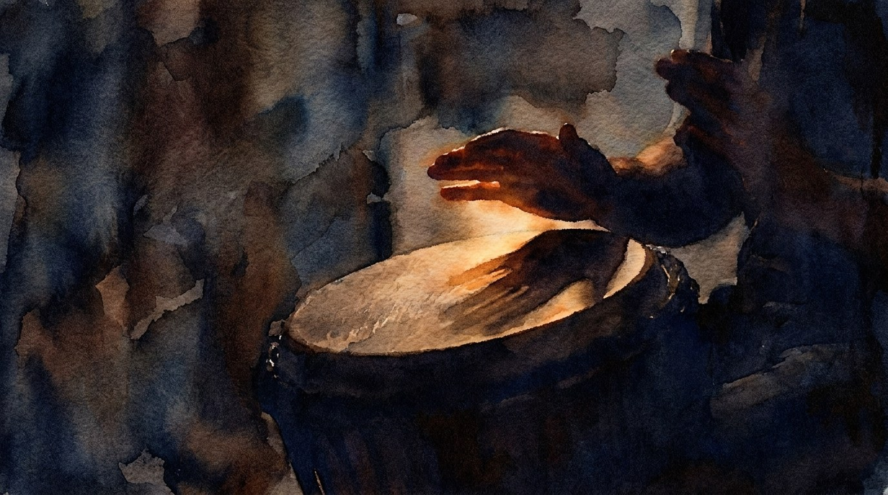
The name is descriptive and deliberately technical. Lapstyle means the drum rests on the seated player's lap — angled across the thigh — rather than being held up in the air by one hand.
The reason for the awkward name is honest scholarship. A drum played in this position gets called a bendir in Morocco and a daf in Persia, but those words already name specific instruments with their own repertoires and construction. Calling the technique lapstyle avoids claiming a tradition the technique does not belong to.
Upright playing — the drum held vertically in one hand — dedicates that hand largely to holding, tilting and damping. It is a great tradition with its own vocabulary, and the riq is played that way.
Put the drum on the leg and something else becomes possible: both hands are free at once. The leg holds the instrument, the thigh can be used to damp or bend the pitch, and the two hands can play independent parts. One player begins to sound like two. That is the entire argument for the position, and it is why the modern solo repertoire lives here.
Two honest warnings. First, tone comes before speed, always; a fast player with a poor dum sounds worse than a slow player with a good one, and the fix is months of slow repetition. Second, this instrument can injure you — the shoulder and the wrist particularly — and the drum's weight, diameter and how it sits on the leg matter more than beginners expect. A teacher watching your body is not a luxury here.
Chapter seven
Riq, bendir, daf, tar, doira, tamburello, pandeiro, kanjira.
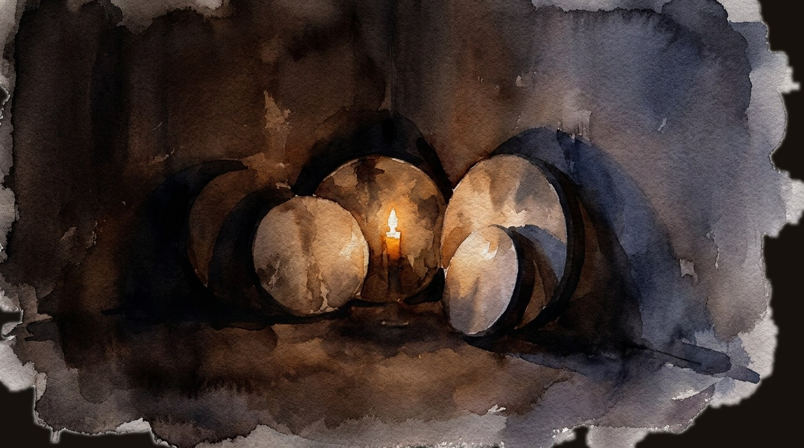
| Instrument | Where | What makes it itself |
|---|---|---|
| Riq | Egypt, Levant | Small, fish-skin or synthetic head, paired metal jingles set into the frame. Essentially two instruments to master at once. The classical Arabic ensemble drum. |
| Bendir | Morocco, North Africa | Larger, no jingles, and a snare of gut or cord stretched under the head that gives it a buzzing sustain. |
| Daf | Iran, Kurdistan | Large, with rows of metal rings hung inside the frame. Chapter nine is about what it is for. |
| Tar | Egypt, Middle East | Plain and often large. No jingles, no snare — just frame and skin, which leaves nowhere to hide. |
| Doira / dayereh | Central Asia, Iran | Rings hung inside the frame; a highly developed solo tradition, especially in Uzbekistan. |
| Tamburello | Southern Italy | Jingled, and central to pizzica and tarantella. Europe's surviving frame drum tradition, and the reason the Salento revival matters. |
| Pandeiro | Brazil | Tunable head, jingles, played held in one hand with a technique built on continuous rotation. Related by construction, entirely its own world. |
| Kanjira | South India | Small, lizard-skin traditionally, one pair of jingles. Pitch bent with the hand from behind. Fearsomely difficult. |
| Bodhrán | Ireland | Played with a beater rather than the hands, but the same family, and evidence that the instrument reached the Atlantic edge too. |
If you want to study lapstyle, buy a plain frame drum with no jingles and no snare — a tar-type or a bendir-type, 40 to 50 cm, with a tuning system if you can afford it. Jingles hide bad tone, and at the start you need to hear exactly how bad your tone is. Natural skin sounds better and moves with the weather; synthetic heads hold their tuning and are the sane first choice in a damp climate.
Chapter eight
Iqa and usul, written out so you can play them tonight.
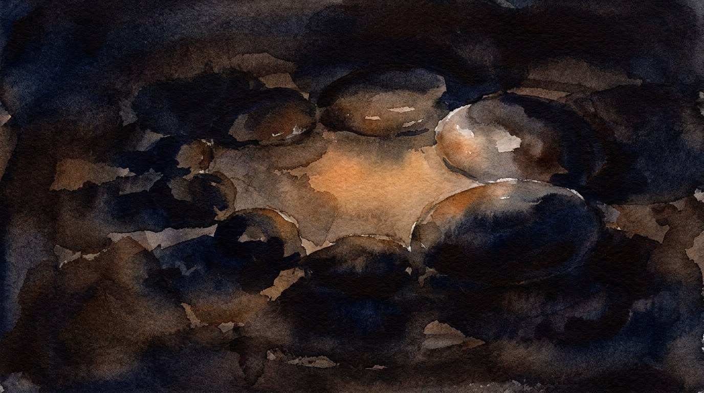
Arabic music organises rhythm into cycles called iqa; Turkish music calls its cycles usul. A cycle is a fixed pattern of low and high strokes over a set number of beats, repeated, and ornamented freely inside the frame.
The notation below uses D for dum (low), T for tek (high), and - for a rest. Say them out loud while you play; the tradition teaches this way and it works.
D T - T D - T -
The most common rhythm in Arabic popular music. If you learn one thing this month, learn this until it is boring, and then keep going.
D D - T D - T -
Maqsum's heavier sibling — the difference is that second dum, and it changes the whole character.
D - T D - - T -
Fast, driving, strongly associated with Sufi contexts and with trance.
D - - T - D D - T - - T - - - -
Slow and expansive. Room to breathe, and where ornamentation gets interesting.
D - - T - D - T - -
Ten beats, grouped 3+2+2+3. The classical Turkish and Arabic cycle, and the point at which most Western players discover their counting is worse than they thought.
Across Turkey, Greece, Bulgaria and the Balkans, rhythm is built from uneven groupings of twos and threes: 7/8 as 2+2+3, 9/8 as 2+2+2+3, 5/8 as 2+3. The Turkish word aksak means limping, and it is exactly right. This is your local advantage if you are in Croatia — you already have this in your ear from Balkan music, and it is the thing frame drum students from Western Europe struggle with most.
Chapter nine
The daf in zikr — a devotional instrument, not a percussion instrument.
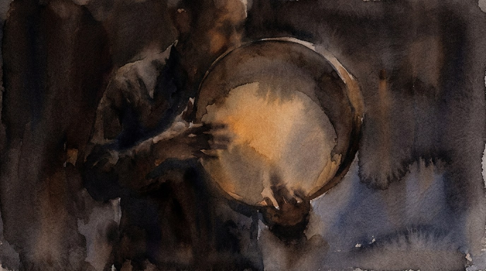
In Kurdish and Persian Sufi practice the daf is not primarily a musical instrument. It is an instrument of zikr — remembrance — and the distinction is not decorative.
Zikr is the repetition of the names of God, often collectively, often with breath and movement, sustained until the ordinary sense of self thins out. The daf carries that repetition. Its metal rings produce a dense wash that fills the room and makes an assembly of people sound like one thing. The pulse is usually simple, because complexity would draw attention to the drummer, and the drummer is not the point.
In some Kurdish orders the daf player holds a specific position within the ceremony, and the instrument itself carries symbolic readings — the circle as the cosmos, the rings as the chains of attachment, the skin as the body. These readings vary by order and by teacher, and I have seen them repeated online with a confidence that flattens real regional differences.
You can learn daf technique from a teacher, and many people do, entirely respectfully. What you cannot do is acquire the context by buying the instrument. A drum used inside a living devotional practice is doing a different job from the same drum on a stage, and the honest position is to learn the technique, say plainly which one you are doing, and not dress a concert as a ceremony.
Chapter ten
The djembe, Mamady Keïta, Famoudou Konaté, and what happened in the West.
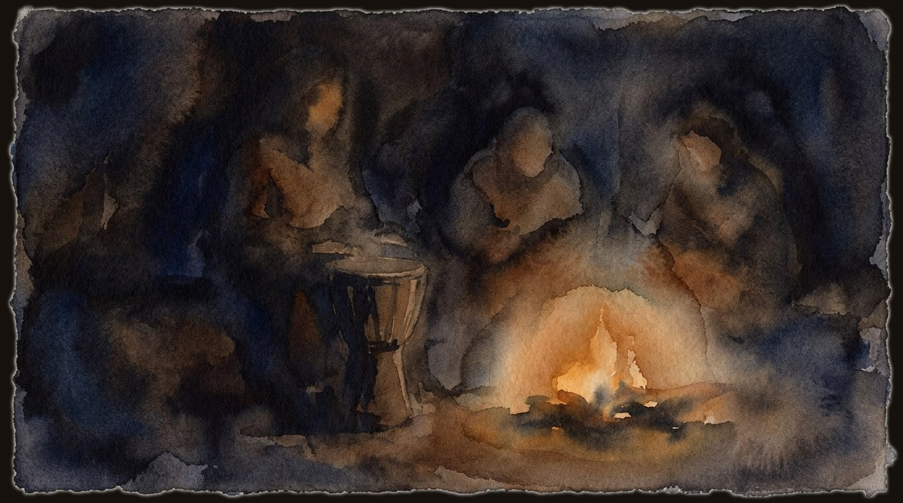
The djembe is not a frame drum. It is here because it is the other hand-drum tradition that came West in the same decades, and because comparing the two says something useful about both.
It is a goblet-shaped drum, carved from a single piece of hardwood with a goat skin, from the Mande-speaking region — Guinea, Mali, and their neighbours. Two players did more than anyone to bring it outward: Mamady Keïta (1950–2021), of Guinea's Ballets Africains, who founded the Tam Tam Mandingue school network and taught a generation of Europeans and Americans; and Famoudou Konaté, also of the Ballets Africains, a master of the Malinke repertoire who has taught extensively in Germany.
In its own setting the djembe is not a solo instrument and it is not a general-purpose drum. It sits in an ensemble with the dunun — the bass drums that carry the actual structure — and a given rhythm belongs to a specific occasion: a harvest, an initiation, a wedding, a particular village, sometimes a particular family.
What travelled West was mostly the djembe by itself, detached from the dununs and from the occasions, played in drum circles as a generic expressive object. That is not nothing — people found real joy in it — but it inverted the instrument's meaning, and the players who brought it out were often explicit that the rhythms had names, owners and purposes.
Which is the interesting part for a frame drummer. The Mediterranean frame drum tradition is centrally a solo and accompaniment tradition — one player, enormous internal detail, ornamentation as the whole art. The Malinke tradition is centrally an ensemble and functional one — interlocking parts, and the meaning in the occasion rather than in the individual. Neither is deeper. But a frame drummer who has spent a year on rizz technique should sit once inside a proper dunun ensemble, because it relocates where music is happening, and that relocation is worth more than another ornament.
Chapter eleven
Konnakol, kanjira, and a way of counting the Mediterranean does not have.
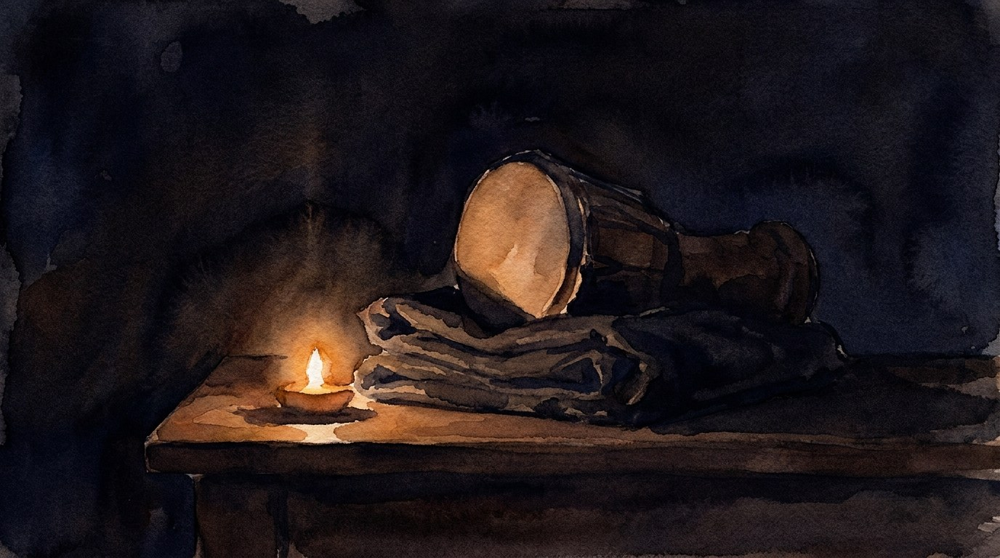
South Indian classical music has something the Mediterranean traditions largely do not: an explicit, teachable, spoken system for constructing rhythm — and any frame drummer who borrows it improves rapidly.
Konnakol is the vocal recitation of rhythmic syllables, and in Carnatic music it is a performance discipline in its own right, not a study aid. Rhythm is spoken before it is played, and complex structures are built out loud.
Its practical gift to a frame drummer is subdivision. Groupings of four, three, five, seven and nine get their own syllable sets, so a player learns to feel a five-grouping as a shape rather than counting it as an arithmetic problem. Bring that back to a 10/8 samai and the cycle stops being difficult.
Where Arabic iqa gives a pattern to inhabit, Carnatic tala gives a cycle plus a set of formal devices for landing on the downbeat by a designed route — phrases repeated in threes to arrive exactly on the first beat, sequences that expand or contract by a fixed number of units each repetition. It is compositional rhythm, and it fits onto a frame drum with almost no adaptation.
The South Indian frame drum: small, traditionally lizard skin, with a single pair of jingles, played with one hand while the other reaches behind the head to bend the pitch. It is played at Carnatic tempos, which is to say very fast, and it is widely considered one of the most demanding hand drums in existence.
The connection is not abstract. Yshai Afterman's guest masterclass series has included the mridangam master Umayalpuram K. Sivaraman — a direct line from this chapter into a lapstyle classroom.
Chapter twelve
The first drum, the first month, and where to study now.
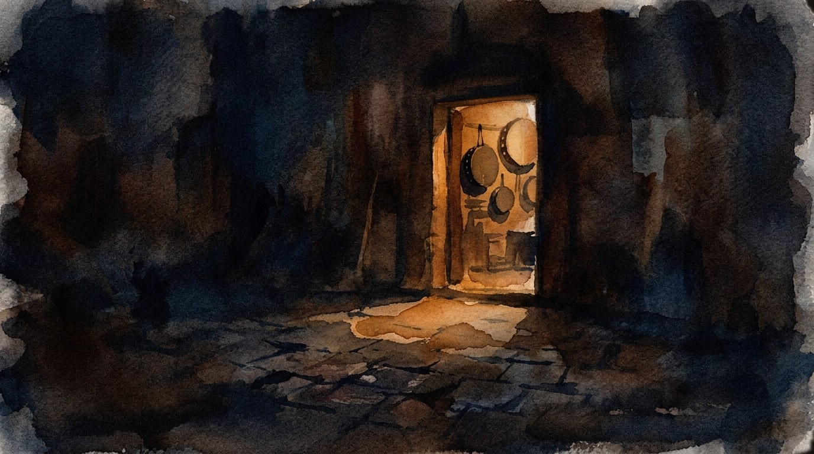
Plain, no jingles, no snare. 40–50 cm. Synthetic head unless you live somewhere dry. A tuning system if the budget allows, because an untunable drum will sound wrong for reasons you will wrongly blame on yourself.
This instrument rewards daily contact more than long sessions. Twenty minutes every day beats three hours on Sunday, and it is not close — the hand learns by repetition distributed over time, and there is no way to compress that. It is the same finding as chapter three of the Yoga Sūtras field book, arrived at from a completely different direction, which is either a coincidence or not.
Apparatus
What was read and where to check it.
All web sources consulted 20 August 2026.
House rule
Stated as plainly as what I could.